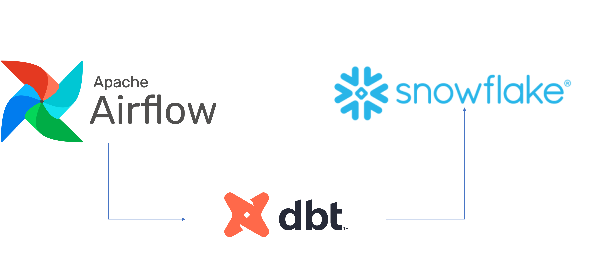
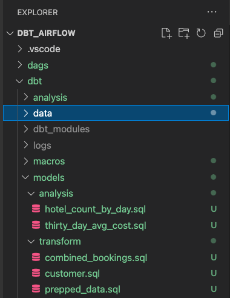

多くの企業が、アジリティ、成長、運用効率をサポートするプラットフォーム上に構築された最新のデータ戦略に注目しています。Snowflakeはデータクラウドであり、あらゆるビジネスのデータパイプラインを簡素化し、企業がインフラストラクチャの管理やメンテナンスではなく、データと分析に集中できるようにする将来を見据えたソリューションです。
Apache Airflowは、データパイプラインの作成と管理に使用できるオープンソースのワークフロー管理プラットフォームです。Airflowは、タスクの有向非巡回グラフ（DAG）で構成されるワークフローを使用します。
dbtは、dbt Labsによって管理されている最新のデータエンジニアリングフレームワークであり、Snowflakeなどのクラウドデータプラットフォームを活用した最新のデータアーキテクチャで非常に人気が高まっています。dbt CLIは、DBTプロジェクトを実行するためのコマンドラインインターフェイスです。このCLIは無料で使用できるオープンソースです。
このバーチャルハンズオンラボでは、Airflowとdbtを使用するためのステップバイステップのガイドに従ってデータ変換ジョブスケジューラを作成します。
では始めましょう。
前提条件
このガイドは、Pythonとdbtに関する基本的な実務知識があることを前提としています。
学習する内容
- Airflowなどのオープンソースツールを使用してデータスケジューラを作成する方法
- DAGを作成してAirflowにアップロードする方法
- dbt、Airflow、Snowflakeを使用してスケーラブルなパイプラインを構築する方法
必要なもの
始める前に以下のものが必要です。
- Snowflake
- Snowflakeアカウント
- **適切な権限で作成されたSnowflakeユーザー。**このユーザーには、DEMO_DB データベースにオブジェクトを作成する権限が必要です。
- GitHub
- **GitHubアカウント。**まだGitHubアカウントを持っていない場合は、無料で作成できます。アカウントの作成を開始するには、Join GitHubページにアクセスしてください。
- **GitHubレポジトリ。**まだレポジトリを作成していない場合、または新しく作成したい場合は、新しいレポジトリを作成します。タイプは「
Public」を選択します（どちらも使用できます）。また、現時点では、README、.gitignore、ライセンスの追加をスキップできます。 - 統合開発環境（IDE）
- **お気に入りのIDEとGitの統合。**お気に入りのIDEとGitをまだ統合していない場合は、Visual Studio Codeをお勧めします。これは無料で利用できるオープンソースの優れたIDEです。
- **コンピュータに複製されたプロジェクトレポジトリ。**Gitレポジトリの接続の詳細については、レポジトリを開き、ページ上部付近にある
HTTPSリンクをコピーします。レポジトリに1つ以上のファイルがある場合は、ページ上部付近にあるの緑色のCodeアイコンをクリックし、HTTPSリンクをコピーします。そのリンクをVS Codeまたはお好みのIDEで使用して、コンピュータにレポジトリを複製します。 - Docker
- ノートパソコン上のDocker Desktop。 Airflowをコンテナとして実行します。Dockerの設定手順に従って、ご希望のOSにDocker Desktopをインストールしてください。
構築するもの
- dbtとSnowflakeを使用したシンプルで実用的なAirflowパイプライン
まず、以下のコマンドを実行してフォルダを作成しましょう。
mkdir dbt_airflow && cd "$_"
次に、Airflowのdocker-composeファイルを取得します。これを行うため、ローカルのノートパソコンへのこのファイルのcurlを実行しましょう。
curl -LfO 'https://airflow.apache.org/docs/apache-airflow/2.3.0/docker-compose.yaml'
ここで、docker-composeファイルを調整し、2つのフォルダをボリュームとして追加します。dagsは、Airflowが取得して分析するためにAirflow DAGが配置されているフォルダです。dbtは、dbtモデルとCSVファイルを設定したフォルダです。
volumes:
- ./dags:/opt/airflow/dags
- ./logs:/opt/airflow/logs
- ./plugins:/opt/airflow/plugins
- ./dbt:/dbt # add this in
- ./dags:/dags # add this in
ここで、追加のdocker-composeパラメータを含む追加ファイルを作成する必要があります。こうすることで、コンテナの起動時にdbtがインストールされます。
.env
_PIP_ADDITIONAL_REQUIREMENTS=dbt==0.19.0
次に、dbtプロジェクトとdagsフォルダを作成する必要があります。
DBTプロジェクトの場合は、dbt init dbtを実行します。後のステップ4で、ここにdbtを設定します。
dagsフォルダの場合は、次を実行してフォルダを作成します。
mkdir dags
ツリーレポジトリは次のようになります。

レポジトリを作成したので、次はDBTプロジェクトを設定します。
始める前に、少し時間を取ってDBTプロジェクトで何をしようとしているのかを理解しましょう。
下の図からわかるように、3つのcsvファイル（bookings_1、bookings_2、customers ）があります。これらのcsvファイルをテーブルとしてSnowflakeにシードします。これについては、後のステップ4で詳しく説明します。
続いて、bookings_1テーブルとbookings_2テーブルをcombined_bookingsにマージします。次に、customer_idでcombined_bookingsテーブルとcustomerテーブルを結合し、prepped_dataテーブルを作成します。
最後に、2つのビューを作成して、prepped_dataの分析と変換を実行します。
hotel_count_by_day.sql：ANALYSISスキーマにhotel_count_by_dayビューを作成し、日別のホテル予約数をカウントします。thirty_day_avg_cost.sql：ANALYSISスキーマにthirty_day_avg_costビューを作成し、過去30日間の予約の平均コストを計算します。

まず、Snowflakeコンソールに移動し、以下のスクリプトを実行しましょう。これにより、dbt_userとdbt_dev_roleが作成されます。その後、dbt_userのデータベースを設定します。
USE ROLE SECURITYADMIN;
CREATE OR REPLACE ROLE dbt_DEV_ROLE COMMENT='dbt_DEV_ROLE';
GRANT ROLE dbt_DEV_ROLE TO ROLE SYSADMIN;
CREATE OR REPLACE USER dbt_USER PASSWORD='<PASSWORD>'
DEFAULT_ROLE=dbt_DEV_ROLE
DEFAULT_WAREHOUSE=dbt_WH
COMMENT='dbt User';
GRANT ROLE dbt_DEV_ROLE TO USER dbt_USER;
-- Grant privileges to role
USE ROLE ACCOUNTADMIN;
GRANT CREATE DATABASE ON ACCOUNT TO ROLE dbt_DEV_ROLE;
/*---------------------------------------------------------------------------
Next we will create a virtual warehouse that will be used
---------------------------------------------------------------------------*/
USE ROLE SYSADMIN;
--Create Warehouse for dbt work
CREATE OR REPLACE WAREHOUSE dbt_DEV_WH
WITH WAREHOUSE_SIZE = 'XSMALL'
AUTO_SUSPEND = 120
AUTO_RESUME = true
INITIALLY_SUSPENDED = TRUE;
GRANT ALL ON WAREHOUSE dbt_DEV_WH TO ROLE dbt_DEV_ROLE;
dbt_userでログインし、次のコマンドを実行してDEMO_dbtデータベースを作成しましょう。
CREATE OR REPLACE DATABASE DEMO_dbt

ここで、ステップ1で設定したプロジェクトdbt_airflow > dbtに戻りましょう。
以下のそれぞれのファイルに対していくつかの構成を設定します。dbt_project.ymlについては、modelsセクションを置き換えるだけでよいことに注意してください。
profiles.yml
default:
target: dev
outputs:
dev:
type: snowflake
######## Please replace with your Snowflake account name
######## for example sg_demo.ap-southeast-1
account: <ACCOUNT_URL>.<REGION>
user: "{{ env_var('dbt_user') }}"
######## These environment variables dbt_user and dbt_password
######## are read from the variabls in Airflow which we will set later
password: "{{ env_var('dbt_password') }}"
role: dbt_dev_role
database: demo_dbt
warehouse: dbt_dev_wh
schema: public
threads: 200
packages.yml
packages:
- package: fishtown-analytics/dbt_utils
version: 0.6.4
dbt_project.yml
models:
my_new_project:
# Applies to all files under models/example/
transform:
schema: transform
materialized: view
analysis:
schema: analysis
materialized: view
次に、packages.yml内に配置したfishtown-analytics/dbt_utilsをインストールします。これを行うには、dbtフォルダからdbt depsコマンドを実行します。
ここで、macrosフォルダの下にcustom_demo_macros.sqlというファイルを作成し、以下のsqlを入力します。
{% macro generate_schema_name(custom_schema_name, node) -%}
{%- set default_schema = target.schema -%}
{%- if custom_schema_name is none -%}
{{ default_schema }}
{%- else -%}
{{ custom_schema_name | trim }}
{%- endif -%}
{%- endmacro %}
{% macro set_query_tag() -%}
{% set new_query_tag = model.name %} {# always use model name #}
{% if new_query_tag %}
{% set original_query_tag = get_current_query_tag() %}
{{ log("Setting query_tag to '" ~ new_query_tag ~ "'. Will reset to '" ~ original_query_tag ~ "' after materialization.") }}
{% do run_query("alter session set query_tag = '{}'".format(new_query_tag)) %}
{{ return(original_query_tag)}}
{% endif %}
{{ return(none)}}
{% endmacro %}
すべてが正しく完了すると、フォルダは次のようになります。注釈付きのボックスは、上で説明した内容です。
最後のステップは、db_utilsのdbtモジュールをインストールすることです。dbtディレクトリから次を実行します。
dbt deps
関連するモジュールがdbt_modulesフォルダにインストールされていることがわかります。
ここまでで、次のようなフォルダ構造になります。

これでdbtの設定は完了です。次のセクションでは、csvファイルとdagsの作成に進みましょう。
このセクションでは、サンプルのCSVデータファイルと関連するSQLモデルを準備します。
まず、dbtフォルダ内のdataフォルダに3つのExcelファイルを作成しましょう。
bookings_1.csv
id,booking_reference,hotel,booking_date,cost
1,232323231,Pan Pacific,2021-03-19,100
1,232323232,Fullerton,2021-03-20,200
1,232323233,Fullerton,2021-04-20,300
1,232323234,Jackson Square,2021-03-21,400
1,232323235,Mayflower,2021-06-20,500
1,232323236,Suncity,2021-03-19,600
1,232323237,Fullerton,2021-08-20,700
bookings_2.csv
id,booking_reference,hotel,booking_date,cost
2,332323231,Fullerton,2021-03-19,100
2,332323232,Jackson Square,2021-03-20,300
2,332323233,Suncity,2021-03-20,300
2,332323234,Jackson Square,2021-03-21,300
2,332323235,Fullerton,2021-06-20,300
2,332323236,Suncity,2021-03-19,300
2,332323237,Berkly,2021-05-20,200
customers.csv
id,first_name,last_name,birthdate,membership_no
1,jim,jone,1989-03-19,12334
2,adrian,lee,1990-03-10,12323
フォルダ構造は次のようになります。

modelsフォルダにanalysisとtransformの2つのフォルダを作成します。分析と変換については、それぞれ以下のセクションに従ってください。
transformフォルダのdbtモデル
transformフォルダ内には3つのSQLファイルがあります。
combined_bookings.sql：上記の2つの予約のCSVファイルを結合し、TRANSFORMスキーマにCOMBINED_BOOKINGSビューを作成します。
combined_bookings.sql
{{ dbt_utils.union_relations(
relations=[ref('bookings_1'), ref('bookings_2')]
) }}
customer.sql：TRANSFORMスキーマにCUSTOMERビューを作成します。
customer.sql
SELECT ID
, FIRST_NAME
, LAST_NAME
, birthdate
FROM {{ ref('customers') }}
prepped_data.sql：TRANSFORMスキーマにPREPPED_DATAビューを作成し、上記の手順で作成したCUSTOMERビューとCOMBINED_BOOKINGSビューの内部結合を実行します。
prepped_data.sql
SELECT A.ID
, FIRST_NAME
, LAST_NAME
, birthdate
, BOOKING_REFERENCE
, HOTEL
, BOOKING_DATE
, COST
FROM {{ref('customer')}} A
JOIN {{ref('combined_bookings')}} B
on A.ID = B.ID
analysisフォルダのdbtモデル
次に、analysisフォルダに進みましょう。analysisフォルダに移動し、以下の2つのSQLファイルを作成します。
hotel_count_by_day.sql：ANALYSISスキーマにhotel_count_by_dayビューを作成し、日別のホテル予約数をカウントします。
SELECT
BOOKING_DATE,
HOTEL,
COUNT(ID) as count_bookings
FROM {{ ref('prepped_data') }}
GROUP BY
BOOKING_DATE,
HOTEL
thirty_day_avg_cost.sql：ANALYSISスキーマにthirty_day_avg_costビューを作成し、過去30日間の予約の平均コストを計算します。
SELECT
BOOKING_DATE,
HOTEL,
COST,
AVG(COST) OVER (
ORDER BY BOOKING_DATE ROWS BETWEEN 29 PRECEDING AND CURRENT ROW
) as "30_DAY_AVG_COST",
COST - AVG(COST) OVER (
ORDER BY BOOKING_DATE ROWS BETWEEN 29 PRECEDING AND CURRENT ROW
) as "DIFF_BTW_ACTUAL_AVG"
FROM {{ ref('prepped_data') }}
ファイル構造は次のようになります。dbtモデルはすでに完了しているので、Airflowの作業に進むことができます。

dagsフォルダに、init.pyとtransform_and_analysis.pyの2つのファイルを作成します。init.pyは初期化を行い、CSVデータを参照します。transform_and_analysis.pyは変換と分析を実行します。
Airflowを使用すると、transform_and_analysis DAGを毎日スケジュールできます。ただし、この例では手動でDAGをトリガーします。
init.py
from datetime import datetime
import os
from airflow import DAG
from airflow.operators.python import PythonOperator, BranchPythonOperator
from airflow.operators.bash import BashOperator
from airflow.operators.dummy_operator import DummyOperator
default_args = {
'owner': 'airflow',
'depends_on_past': False,
'start_date': datetime(2020,8,1),
'retries': 0
}
with DAG('1_init_once_seed_data', default_args=default_args, schedule_interval='@once') as dag:
task_1 = BashOperator(
task_id='load_seed_data_once',
bash_command='cd /dbt && dbt seed --profiles-dir .',
env={
'dbt_user': '{{ var.value.dbt_user }}',
'dbt_password': '{{ var.value.dbt_password }}',
**os.environ
},
dag=dag
)
task_1
transform_and_analysis.py
from airflow import DAG
from airflow.operators.python import PythonOperator, BranchPythonOperator
from airflow.operators.bash import BashOperator
from airflow.operators.dummy_operator import DummyOperator
from datetime import datetime
default_args = {
'owner': 'airflow',
'depends_on_past': False,
'start_date': datetime(2020,8,1),
'retries': 0
}
with DAG('2_daily_transformation_analysis', default_args=default_args, schedule_interval='@once') as dag:
task_1 = BashOperator(
task_id='daily_transform',
bash_command='cd /dbt && dbt run --models transform --profiles-dir .',
env={
'dbt_user': '{{ var.value.dbt_user }}',
'dbt_password': '{{ var.value.dbt_password }}',
**os.environ
},
dag=dag
)
task_2 = BashOperator(
task_id='daily_analysis',
bash_command='cd /dbt && dbt run --models analysis --profiles-dir .',
env={
'dbt_user': '{{ var.value.dbt_user }}',
'dbt_password': '{{ var.value.dbt_password }}',
**os.environ
},
dag=dag
)
task_1 >> task_2 # Define dependencies
docker-compose upを実行し、http://localhost:8080/に移動しましょう。デフォルトのユーザー名はairflow、パスワードはairflowです。

ここでは2つの変数を作成します。admin > Variablesに移動し、+アイコンをクリックします。

まず、dbt_userのキーと値dbt_userを作成しましょう。

次に、dbt_passwordの2番目のキーと値

DAGをアクティブ化します。1_init_once_seed_dataと2_daily_transformation_analysisの青いボタンをクリックします。

1_init_once_seed_dataの実行
次に、1_init_once_seed_dataを実行してデータをシードしましょう。実行するには、DAGの右側のActionsの下にある再生アイコンをクリックします。

パブリックスキーマに作成されたテーブルのシードデータの表示
Snowflakeインスタンスに戻ったときにすべてがうまくいっている場合は、PUBLICスキーマに正常に作成されたツリーテーブルが表示されます。

2_daily_transformation_analysisの実行
次に、2番目のDAG 2_daily_transformation_analysisを実行して、transformモデルとanalysisモデルを実行します。

TransformビューとAnalysisビューが正常に作成されました。

おめでとうございます。dbtとSnowflakeを使用して最初のApache Airflowを作成しました。無料トライアルを続行し、自分のサンプルデータまたは本番データをロードして、このラボで扱っていないAirflowとSnowflakeのより高度な機能を試してみることをお勧めします。
関連リソース：
- 18,000人を超えるデータ実務者が参加するdbtコミュニティのSlackに今すぐ参加してください。専用のSlackチャネル#db-snowflakeでは、Snowflake関連コンテンツを配信しています。
- 簡単なAirflow DAGの作成方法に関するクイックチュートリアル
ここまで学んだ内容：
- Airflow、dbt、Snowflakeの設定方法
- DAGを作成し、DAGからdbtを実行する方法